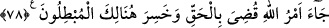

tasalandıramaz. Çünkü belâ içinde iken bile onu kimin verdiğini görmektedirler. Bunlar
gözlerini esas âhiret nimetlerine dikmişlerdir. Allah düşmanlarının dünyadaki gam ve
kasâvetlerinin sebebi, açıklanmayı gerektirmeyecek kadar âşikârdır. Zira dünyada
nefsiyle birlikte olan biri nasıl rahat olabilir? Âhirette Allah’ın öfkesine mâruz kalacak
bir insan nasıl gülebilir?
Âyet-i kerîmede kişinin Allah ile nasıl karşılaşacağına dâir de bir işaret vardır: Kul
isyân eden biriyse Mevlâsına, O kendisine öfkeli olduğu halde gider. İtâatkâr biriyse
sevgilisine büyük bir iştiyakla giden biriymişçesine gider.
Ömrün baharı dostlarla birlikte olmaktır.
78. Andolsun, senden önce de peygamberler gönderdik. Onlardan sana kıssalarını
anlattığımız kimseler de var, durumlarını sana bildirmediğimiz kimseler de var.
Hiçbir peygamber Allah’ın izni olmaksızın herhangi bir âyeti kendiliğinden
getiremez. Allah’ın emri gelince de hak uygulanır ve o zaman bâtılı seçenler
hüsrana uğrayacaklardır.
“Andolsun” ey Muhammed! “Senden” senin gönderilişinden ya da senin çağından
“önce de” birçok “peygamber gönderdik.” rivâyet edilir ki: Allah’ın âyetleri hakkında
cedelleşenler, Yüce Allah’ın Hz. Peygamber (s.a.) aracılığıyla gösterdiği mûcizelere ek
olarak yerden pınarlar fışkırtması, bahçeler çıkartması, göklere yükselmesi gibi
birtakım mûcizeler daha getirmesini istemişlerdir. Oysa onun gösterdiği mûcizeler
doğruluğuna yeterli derecede delâlet ediyordu. Cenab-ı Hak bu âyeti işte bunun üzerine
indirmiştir.
“Onlardan sana kıssalarını anlattığımız kimseler de var.” Bu ifâde, “Kur’an’da özel
olarak ismini de belirterek açıkladığımız için senin de tanıdığın” mânâsındadır.
“Durumlarını sana bildirmediğimiz kimseler de var:” Adlarından bahsetmeyerek
sana haber vermediklerimiz de var.
Kâşifî der ki: Onlardan bazısı, sana kıssalarını aktardığımız yirmi dokuz
peygamberdir.
Aynü’l-maânî’de de der ki: Bunlar, yirmisekiz kişidir. Bir kısmı ise sana kıssalarını
anlatmadığımızdır; ancak adları bilinmektedir: Elyesa’ ve diğerleri gibi. Bir kısmı da ne
adları bilinen, ne de kıssaları işitilenlerdir. Onlara îman hususunda, sayılarının
belirlenmesi ve isimlerinin bilinmesi şart değildir.
Hz. Ali’nin bildirdiğine göre Allah Teâlâ, zenci bir peygamber de göndermiştir.